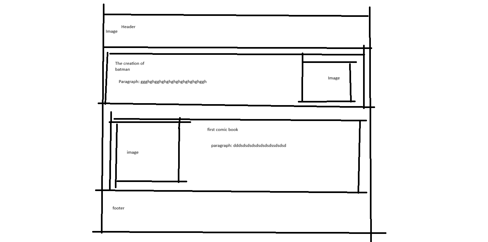
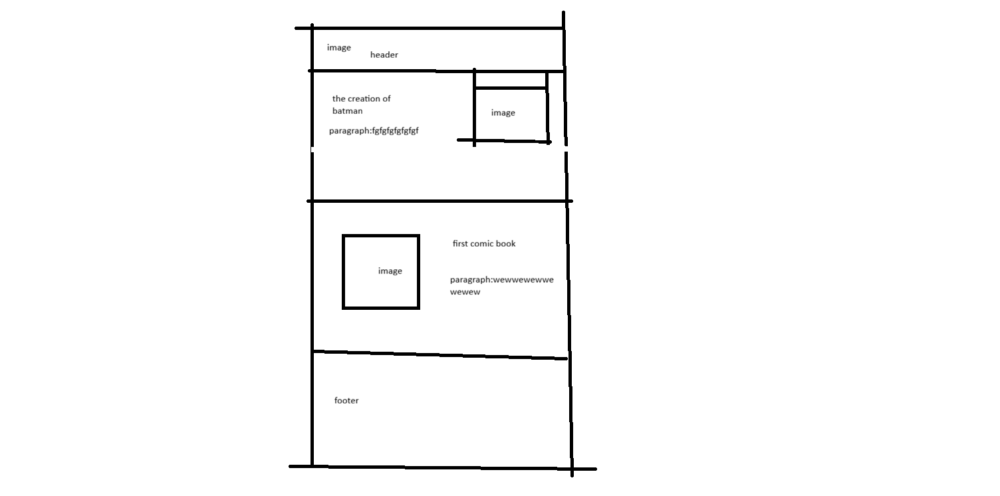

Site Name: The World of Batman
-This name represents both the world of batman in the comics, and the character's place in our world.
Site Purpose
-Batman is my favourite superhero and I want to express my interest and knowledge of the character. The site is for those who also love batman and want to learn more about him.
Scenarios
-When was the first issue of batman released?
-Why did Bruce Wayne become Batman?
Who was Batman's greatest villian?
Color Scheme
The 4 main color schemes would be: blue:#001aff, yellow:rgb(248, 248, 59), black, and white.
blue would be used for headings and borders, black for text, white for background, and yellow for accents throughout the page.
Typography
The header will use Sekuya font, and text in the body will use Libertinus Serif font.
wireframe

